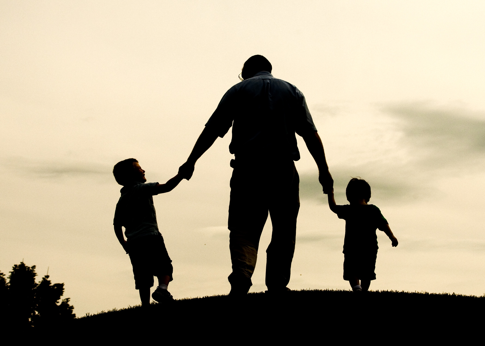

Episodes

What Tweens and Teens Need Now
November 11, 2022
Building Resilience in Children and Teens author and Center for Parent & Teen Communication director Dr. Kenneth Ginsburg joins with a set of virtual hugs to parents of tweens and teens as we discuss what our older kids need as we exit the pandemic.
Source -Dad Edge Podcast

Making the Ordinary Moments Extraordinary
November 5, 2022
Life moves pretty fast…if you don’t stop and take a look around every once in a while…you could miss it.
Source -Dad Edge Podcast

The Power of Leading Your Kids By Example
November 18, 2022
“Leadership isn’t about your title…leadership is about your influence.”
Source -Dad Edge Podcast
"Every father should remember one day his son will follow his example, not his advice”
- Charles Kettering -